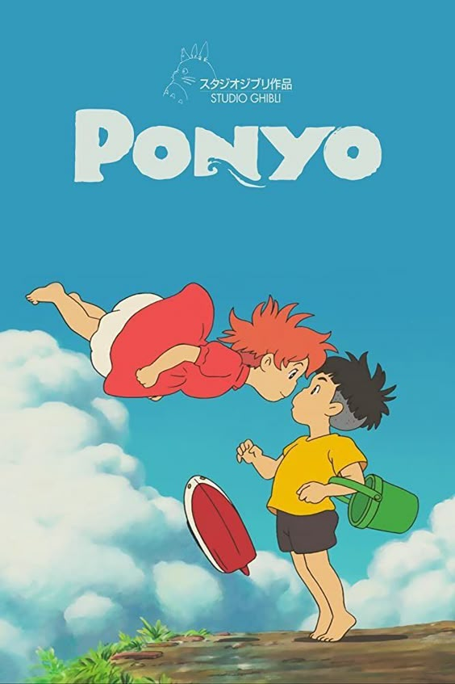
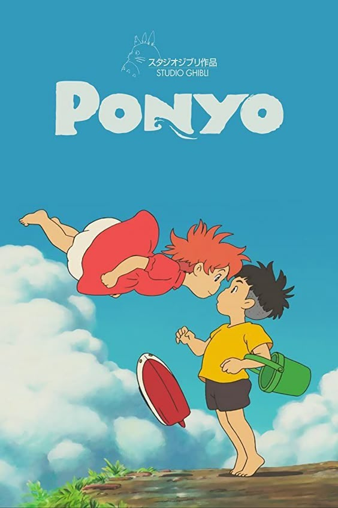

Profile.
Who am i?
My name is Rose and im 17 years old. I've recently moved to Vlissingen all the way from The Hague to come study at HZ.
I had a dog at home called Pluto but since my new appartment doesnt allow pet he had to stay in The Hague. In my free time
I like playing video games, wathcing movies and going to the movies and building gundam figures. My favorite kind of games
are open-world games. I like exploring and leveling up usually more than the main story. One of my favorite games of all time
is red dead redemption II, eventhough i have spent more than 200 hours playing it im still in chapter 2.
I love all kinds of movie but i definetly have a prefrence for horror and sci-fi. I do watch movies at home all the time but i prefer
going to the theatre. I have a pathe ulimited subscription which allows me to go for free so ill usually go to the movies atleast
once a week but sometimes multiple times a day.
I like being creative and working with my hand on cool projects like big lego build or gundam figures. Ive only made one gundam
figure so far but i loved it so i already have 2 new sets waiting to be built.
Me in a summary
- My name is Rose
- I'm 17 years old
- I like video games (surprising)
- I like movies, mostly going to the theatres
- I like building figures
- I have a dog called Pluto
- My biggest dream is to take the train through every country in europe
.
.
.
My favorite movies
 

My favorite music


My favorite games